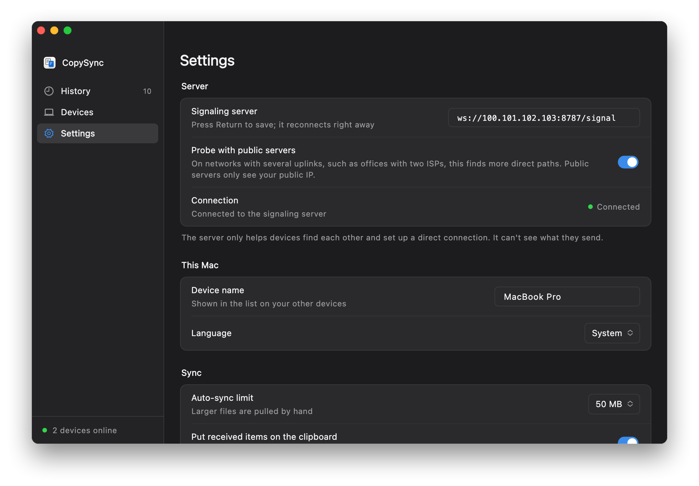

As if on one LAN
Tailscale connects your devices into a private network: every device signed in to the same account gets a fixed address starting with 100, reachable from the others wherever they are. Install the CopySync server on that address and enter it in the apps; everything else works as on a LAN.
- The server stays at home on any always-on Windows, Mac or Linux computer, just like on a LAN.
- Every computer runs Tailscale, signed in to the same account, including the server computer.
- Encrypted twice. Inside Tailscale's WireGuard tunnel runs CopySync's own end-to-end encrypted connection. Neither Tailscale nor your server can see the content.
Before you start
- A computer that stays on
- It runs the server, with the same requirements as on a LAN; sync pauses while it's off or asleep. Its Tailscale address doesn't change, so there's nothing to reserve in the router.
- A Tailscale account
- Free for personal use; sign in with Google, Microsoft, GitHub or Apple. Use the same account on every device.
- Tailscale on every computer
- There are clients for Windows, macOS and Linux. Every computer that runs CopySync needs it, including one that never leaves home.
- ZeroTier works too
- So does any tool that gives each device a fixed virtual address: install the server on that address and enter it in the apps. This guide uses Tailscale.
Step 1
Install Tailscale on each computer
On the server computer and every computer you sync, install it and sign in to the same account.
- Download the client for your system from the Tailscale website and install it.On Linux, run
curl -fsSL https://tailscale.com/install.sh | sh, thensudo tailscale up, and open the link it prints to sign in. - Open Tailscale and sign in, using the same account on every computer.
- The Tailscale admin console then lists all your devices, each with an address starting with 100.
| Machine | Tailscale address | OS |
|---|---|---|
| mac-mini Server | 100.101.102.103 | macOS |
| macbook-pro | 100.88.20.5 | macOS |
| home-pc | 100.92.41.17 | Windows |
One more thing on the server computer
- Windows: right-click the Tailscale icon in the notification area and turn on Run unattended under Preferences. Otherwise Tailscale disconnects when you sign out, and computers elsewhere lose the server.
- Mac: stay logged in, keep it awake, and make sure Tailscale opens at login. The CopySync server also only runs while you're logged in.
- Turn off key expiry: by default Tailscale asks devices to sign in again every 180 days. On the Machines page of the admin console, open the menu at the end of the server's row and choose Disable key expiry.
Step 2
Find the server's Tailscale address
On the server computer, click the Tailscale icon in the menu bar (the notification area on Windows); the menu shows this device's address. Or run tailscale ip -4 in a terminal.
% tailscale ip -4 100.101.102.103
The steps below use 100.101.102.103; use your own address.
Step 3
Install the server on that address
The install scripts use the LAN address by default. Pass the Tailscale address instead so computers elsewhere can use the server's relay. Already installed it with the LAN guide? Run the script again with the address; your settings are kept.
Windows
- Download copysync-server-windows-amd64.zip and choose Extract All. If it's already installed, use the folder you extracted before.
- Open the extracted folder, type
cmdin the address bar at the top and press Enter to open a Command Prompt. - Run
install.cmd 100.101.102.103with your address, and click Yes when User Account Control asks. - Installation continues in a new window. The address at the end should be
ws://100.101.102.103:8787/signal.
- Firewall already allowed: the script's inbound rule applies to every network, Tailscale's adapter included.
- If you see "Windows protected your PC", click More info, then Run anyway.
C:\Users\me\Downloads\copysync-server-windows-amd64>install.cmd 100.101.102.103
> Stopping the running version > Installing to C:\Program Files\CopySync Server > Registering the service CopySyncServer (relay address 100.101.102.103) > Allowing it through Windows Firewall > Starting √ Running Installed: copysync-server 1.3.3. It runs as a Windows service and starts with Windows. In CopySync on each computer, set Settings > Signaling server to: ws://100.101.102.103:8787/signal Program C:\Program Files\CopySync Server Logs C:\ProgramData\CopySync Server\server.log Restart Restart-Service CopySyncServer (in an administrator PowerShell) Uninstall double-click uninstall.cmd
macOS
- Open Terminal and run these lines, with your address on the last one:
curl -LO https://github.com/baiyuze/copysync/releases/latest/download/copysync-server-macos.tar.gz tar xzf copysync-server-macos.tar.gz cd copysync-server-macos ./install.sh 100.101.102.103 - The address at the end should be
ws://100.101.102.103:8787/signal.
- Already installed? Run
./install.sh 100.101.102.103in the same folder; your settings are kept. - If the macOS firewall is on, the script ends with the command to allow copysync-server.
% ./install.sh 100.101.102.103 ▶ Stopping the running version ▶ Installing to /Users/me/Library/Application Support/CopySync Server ▶ Writing the LaunchAgent (relay address 100.101.102.103) ▶ Starting ✓ Running Installed: copysync-server 1.3.3. It starts whenever you log in to this Mac. In CopySync on each computer, set Settings → Signaling server to: ws://100.101.102.103:8787/signal Logs /Users/me/Library/Logs/CopySync/server.log Restart launchctl kickstart -k gui/501/com.copysync.server Uninstall ./install.sh uninstall
Linux
- Run these lines, with your address on the last one:On ARM, replace
amd64witharm64.curl -LO https://github.com/baiyuze/copysync/releases/latest/download/copysync-server-linux-amd64.tar.gz tar xzf copysync-server-linux-amd64.tar.gz cd copysync-server-linux-amd64 sudo ./install.sh 100.101.102.103 - The address at the end should be
ws://100.101.102.103:8787/signal.
Already installed? The Linux script leaves an existing config alone. Replace the old address in it with the Tailscale address (put your old address in place of 192.168.1.20) and restart the service:
sudo sed -i 's/192.168.1.20/100.101.102.103/g' /etc/copysync/server.env
sudo systemctl restart copysync-server$ sudo ./install.sh 100.101.102.103 ▶ Installing the binary to /usr/local/bin ▶ Writing the systemd unit ▶ Writing /etc/copysync/server.env (relay address 100.101.102.103) ▶ Starting ✓ Running Installed: copysync-server 1.3.3 In CopySync on each computer, set Settings → Signaling server to: ws://100.101.102.103:8787/signal Config /etc/copysync/server.env Logs journalctl -u copysync-server -f Restart systemctl restart copysync-server Uninstall sudo ./install.sh uninstall Open in your firewall: TCP 8787 (signaling), UDP 3478 (STUN and TURN), UDP 32768-60999 (relay ports, assigned by the OS)
Step 4
Check from outside
On a computer outside your home network, or a laptop on your phone's hotspot, make sure Tailscale is connected and open http://100.101.102.103:8787/healthz in a browser. If you see this line, the server is reachable from outside.
{"status":"ok","version":"1.3.3"}
If it doesn't load, see the questions below.
Step 5
Enter the address on each computer
Open Settings
Open CopySync on each computer, including the one running the server, and go to Settings.
Enter the Tailscale address
Under Signaling server, enter
ws://100.101.102.103:8787/signalwith your address and press Return or Enter.Check the status
When Connection shows a green Connected, you're set. If you haven't paired yet, pair under Devices.

Use the Tailscale address on your home computers too, not the LAN address, so nothing changes when a computer leaves the house. When they're all at home, the data still stays on your home network.
Questions
Devices show Direct, but it's slow
Direct in CopySync means the two computers connect directly on the Tailscale network. When Tailscale can't connect them peer to peer, it relays through its DERP servers, which can be far away.
Run tailscale ping other-address in a terminal: via DERP means Tailscale is relaying; via an IP and port means it's peer to peer. Office and campus networks relay more often; you can run your own DERP server or try another mesh VPN.
The status stays at Not connected
First make sure Tailscale is connected on that computer, then open http://server-tailscale-address:8787/healthz in a browser.
If it doesn't load, check whether the server computer is asleep, whether Tailscale is online there (Run unattended on Windows, staying logged in on a Mac), whether the server still uses its LAN address, and whether a firewall on a Mac or Linux server blocks it.
Does every computer need Tailscale?
Yes. A computer without it can't reach the 100.x addresses, and computers elsewhere can't reach it. That includes one that never leaves home.
I already followed the LAN guide. Start over?
No. Run the install script again with the Tailscale address (on Linux, edit the config), then change the server address on each computer to the Tailscale one. Paired devices stay paired.
Can Tailscale see what I copy?
No. Tailscale connections are end-to-end encrypted with WireGuard, and inside runs CopySync's own DTLS-encrypted connection; only your two computers can open either layer. Tailscale's servers only exchange device keys and addresses, and its relays forward encrypted packets.
Will the server's Tailscale address change?
Usually not. The address belongs to the device and survives restarts and network changes; it only changes if you remove the device from Tailscale and add it again.
I have a public IP. Do I need Tailscale?
No. Run the server on the machine with the public IP and enter that address on every computer; see the steps on the home page.
The server stays home.
Your clipboard comes with you.
Version 1.3.3, free and open source. macOS 13 or later, Intel and Apple silicon; Windows 10 and 11.
Back to the LAN guide